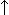
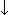
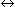

Copyright ©1995 by NeXT Computer, Inc. All Rights Reserved.
| DBTableView |
| Inherits From: | ScrollView : View : Responder : Object | |
| Declared In: | dbkit/DBTableView.h |
| Class Description |
| DBTableView is a class that displays data in a table. It's similar to the Matrix class, but with two important differences: First, the data resides not in the DBTableView instance but in an external data source (usually a DBRecordList). Second, the table's rows and columns can be individually resized and repositioned by the user.
A DBTableView object consists of up to three different views: A row title view, a column title view, and a content view. The content view can be made scrollable, horizontally, vertically, or both. The row and column title views display title information; the titles automatically scroll with their contents. Either or both the title views may be hidden.
Rows and Columns Although the appearance of the DBTableView is completely configurable, the usual arrangement is to have a fixed number of properties (fields) arranged as columns. Columns are therefore said to be the table's static axis. The rows, representing records, vary dynamically with the data source or with the qualifier used to select records. In that case, rows are said to be the table's dynamic axis. Usually such a DBTableView has column titles but no row titles. (If you ask for titles on a dynamic axis, the display shows consecutive integers, reporting the record's position in the data source.) When a new DBTableView is initialized, it has no rows and no columns, and neither rows nor columns are static. Sending it the first addColumn:withTitle: message both adds a column and makes columns static rather than dynamic. Similarly, sending it an addRow:... message would do the same thing for rows. A few applications may want to have both rows and columns static. In the common case (that is, static columns, dynamic rows), you call addColumn:... for each column, and then hook up a data source to provide the data. The rows will then be determined lazily at display time through the data source's getValueFor:at:into: method. Like a very lazy browser, the DBTableView doesn't cache data. There are two ways to refer to a static vector: by its row or column number, or by the property that it represents. Most of the methods that manipulate specific rows or columns refer to them by row number or column number. These numbers are like indexes to an array: if the user or the application moves a vectors to a new position, or deletes or inserts a vector, the row or column numbers change accordingly.
Formatting To format the display of its content view, a DBTableView uses subclasses of the abstract superclass DBFormatter (see the specifications of DBFormatter, DBTextFormatter, DBEditableFormatter, and DBImageFormatter). A formatter is responsible for taking the data from a particular row/column intersection within the DBTableView's grid and displaying it in a particular rectangle on the screen. That row/column intersection is in some ways like a Cell within a Matrix object, but there are important differences. Whereas a Cell actually stores its data, a formatter does not; a DBTableView must always refer to its data source to get the values it displays. Although a formatter displays the field at a single row/column intersection, its formatting rule applies to any of the fields having the same property. That is, in the usual case (with static columns), it applies to all the fields in a particular column. When rows are static, it applies to all the fields in a particular row. Since the formatter can apply either to a row or to a column, it is said to apply to a vector--that is, to one axis of the table (be it row or column). The DBVectors protocol provides methods for specifying the format of fields within a vector.
Response to User Action Although DBTableView is not a subclass of Control, it does implement the target/action paradigm, so that the target to be notified and the action to be performed can be selected in Interface Builder's Conection Inspector. Whenever the user double clicks, or selects a new row or column, whether by mouse action or by pressing the arrow keys, notification is sent to the delegate. |
| Instance Variables |
| id delegate
id dataSource id rowLayout id columnLayout id rowHeading id columnHeading id rowsClip id columnsClip id gridView id rowSel id columnSel id cornerView id target SEL action SEL doubleAction |
| delegate | The object notified of a double click or change of selection | |
| dataSource | The DBAssociation linking this view to its data | |
| rowLayout | Row layout information | |
| columnLayout | Column layout information | |
| rowHeading | Heading of the selected row | |
| columnHeading | Heading of the selected column | |
| rowsClip | Clip view for the row headings | |
| columnsClip | Clip view for the column headings | |
| gridView | The actual data view | |
| rowSel | The list of selected rows | |
| columnSel | The list of selected columns | |
| cornerView | View in the upper left corner of the DBTableView | |
| target | The object that receives target/action messages | |
| action | Selector of the action of a target/action message | |
| doubleAction | Selector of the action of a double-click message |
| Method Types |
| Initializing and freeing |
| Setting up the DBTableView |
| Setting and reporting formatting |
| Notifying the DBTableView of change |
| Handling rows and columns |
| Editing support |
| Handling the selection |
| Setting DBTableView components |
| Adjusting the view |
| Transmitting action |
| Archiving |
| Appointing a delegate |
| Instance Methods |
| acceptArrowKeys: |
| Enables or disables the arrow keys for keystrokes the user makes within the DBTableView, as flag is YES or NO. The default when a DBTableView is initialized is YES. Returns self.
When at least one row is selected,  moves the selection to the row below the highest selected row, and  to the row above it (if necessary, scrolling to make the newly selected row visible); the horizontal arrows do nothing. Similarly, when at least one column is selected, See also: |
| acceptsFirstResponder |
| Returns YES if the DBTableView accepts the role of first responder for its Window. |
| action |
| Returns the selector for the action method that will be sent to the DBTableView's target when a target/action event occurs in the DBTableView. Usually, this is the action you selected in Interface Builder's Connections Inspector. |
| addColumn:at: |
| Inserts a new static column into the DBTableView. The data for the new column will come from the DBRecordList's attribute identified by identifier. The new column will be inserted so that it precedes the column whose column-number (before the insertion) was aPosition. No title is assigned to the new column; its formatting will be handled by a default formatter. Return self. |
| addColumn:withFormatter:andTitle:at: |
| withFormatter:formatter andTitle:(const char *)title at:(unsigned int)aPosition |
| Inserts a new static column into the DBTableView. The data for the new column will come from the DBRecordList's attribute identified by identifier. Text for the new column's title will be taken from title. The column's formatting will be handled by formatter. The new column will be inserted so that it precedes the column whose column-number (before the insertion) was aPosition. |
| addColumn:withTitle: |
| Appends a new static column following the last existing column in the DBTableView. The data for the new column will come from the DBRecordList's attribute identified by identifier. Text for the new column's title will be taken from title. The new column has its own default DBTextFormatter. Returns self. |
| addRow:at: |
| Inserts a new static row into the DBTableView. The data for the new row will come from the DBRecordList's attribute identified by identifier. The new row will be inserted so that it precedes the row whose row-number (before the insertion) was aPosition. No title is assigned to the new row; its formatting will be handled by a default formatter. Returns self. |
| addRow:withFormatter:andTitle:at: |
| withFormatter:formatter andTitle:(const char *)title at:(unsigned int)aPosition |
| Inserts a new static row into the DBTableView. The data for the new row will come from the DBRecordList's attribute identified by identifier. Text for the new row's title will be taken from title. The row's formatting will be handled by formatter. The new row will be inserted so that it precedes the row whose row-number (before the insertion) was aPosition. Returns self. |
| addRow:withTitle: |
| Appends a new static row following the last existing row in the DBTableView. The data for the new row will come from the DBRecordList's attribute identified by identifier. Text for the new row's title will be taken from title. The new row gets it its own DBTextFormatter. If the DBTableView previously had no rows, adding a row makes rows static. Returns self. |
| allowEmptySel: |
| Permits the user to deselect a vector (with shift-click) when that would leave nothing selected (or prohibits it, when flag is NO). The default is NO. Returns self.
See also: |
| allowVectorReordering: |
| Permits the user to drag a static vector to a new position within the DBTableView (or prohibits it, when flag is NO). The default is YES. To drag a vector, the user must click in the vector's title area (to select it) and then drag; it isn't possible to drag an untitled vector. The new ordering of vectors depends on the ordering of their midpoints. That is, if column B is to the right of column A, to reverse their positions the user must drag B until its midpoint is to the left of A's midpoint. Returns self.
See also: |
| allowVectorResizing: |
| Permits the user to drag the edges of a static vector so as to change its height or width (or prohibits it, when flag is NO). To resize a vector, the user must start to drag from a position over the title's edge. In that position, the cursor changes to a double arrow (like this  for a column, or the corresponding vertical form for a row). It isn't possible to resize an untitled vector. Returns self.
See also: |
| columnAt: |
| Returns the object that controls the formatting of the (static) column identified by aPosition. |
| columnCount |
| For a DBTableView with static columns, returns the number of columns. For a table view whose columns are dynamic, returns the number of columns in the data source. |
| columnHeading |
| Returns the view that contains the DBTable's column headings. |
| columnList |
| Returns a list of the identifiers of successive columns in the order that they currently appear in the DBTableView. (If columns aren't static, returns nil.) |
| columnsChangedFrom:to: |
| Notification that the data source has changed the values in a block of consecutive columns, so their display should be redrawn. The first of the changed columns is identified by startColumn, the last by endColumn. Returns self. |
| dataSource |
| Returns an object that identifies the source from which the DBTableView is getting the data it's displaying. The returned object is a private subclass of DBAssociation; sending it a fetchGroup message will return the fetch group that is fetching the data. |
| delegate |
| Returns the DBTableView's delegate. The delegate receives notification of a double click within the DBTableView, or any of the actions that cause a change in the row or column selected. |
| deselectAll: |
| If empty selection is permitted, deselects all selected vectors and their row or column headings. If empty selection is not permitted, deselects all but the first. Notifies the deleegate by sending it a tableViewDidChangeSelection: message, and sends an action message to the DBTableViews's target. Returns self.
See also: |
| deselectColumn: |
| Deselects the indicated column. However, if this is the only selected column and an empty selection is not allowed, does nothing. Returns self. |
| deselectRow: |
| Deselects the indicated row. However, if this is the only selected row and an empty selection is not allowed, does nothing. Returns self. |
| doesAcceptArrowKeys |
| Returns YES if arrow keys are enabled while the DBTableView is first responder.
See also: |
| doesAllowEmptySel |
| - (BOOL)doesAllowEmptySel |
| Returns YES if the DBTableView permits the user to deselect a vector (with Shift-click) when that would leave nothing selected. The default is NO.
See also: |
| doesAllowVectorReordering |
| Returns YES if the DBTableView permits the user to drag a static vector (row or column) to a new position. The default is YES.
See also: |
| doesAllowVectorResizing |
| Returns YES if the DBTableView permits the user to resize a static vector (row or column). The default is YES.
See also: |
| doubleAction |
| Returns the selector for the action to be taken when the user double clicks within the DBTableView. (Usually, the action is interpreted as a request to edit a particular row/column intersection within the table.) |
| drawSelf:: |
| Invoked by various methods during scrolling or dragging to redraw the DBTableView. Your application shouldn't need to call this method directly. The argument rects is a list of pointers to the coordinates of rectangles in which the DBTableView is visible, while count is the number of such rectangles. Returns self. |
| dynamicColumns |
| Returns YES if the DBTableView's columns are dynamic: that is, if the number of available columns is determined by the number of records available (in contrast to the static number of attributes). |
| dynamicRows |
| Returns YES if the DBTableView's rows are dynamic: that is, if the number of available rows is determined by the number of records available (in contrast to the static number of attributes). |
| editFieldAt:: |
| Selects the entry at the indicated row and column, and invokes an editor. This achieves programmatically the effect the user would produce by double-clicking a field within the DBTableView's content view.
Editing a field permits the user to change the text displayed there. When the user signals completion (by pressing Enter, or by clicking outside the field being edited), the editor may invoke methods to validate the revised field, and, if it is acceptable, copy its value to the table view's data source. Returns self. |
| endEditing |
| Invoked automatically to redraw the field that has been edited at the conclusion of editing. Returns self. |
| finishUnarchiving |
| Invoked as the last step in reading a DBTableView from an archive, to position the table view within its frame, layout its rows and columns and their headings (if appropriate), and initialize the selection of rows and columns. You shouldn't need to invoke this explicitly, since it is done automatically as part of the process of reading from an archive. Returns self. |
| formatterAt:: |
| Returns the formatter responsible for the field at the intersection of the indicatated row and column of the display. In a typical display, one axis (usually columns) is static and the other (usually rows) is dynamic. In that case, the same formatter applies throughout a given static position, and the dynamic index is immaterial. If there is no formatter explicitly assigned to the specified field, the method returns a default formatter for the type of data (text or image).
You may want to override this method in order to apply different formatting rules. |
| free |
| Frees the storage used by a DBTableView instance (by freeing the table view's various internal components before invoking the superclass's free method). Returns nil. |
| getIntercell: |
| Reports the number of pixels of spacing between adjacent cells, by setting theSize with the two values, for horizontal and vertical separation. The default is 2, 2. Returns self. |
| initFrame: |
| Initializes a DBTableView instance within the frame boundaries specified by newFrame. The new view has no rows or columns, and both axes are considered dynamic. Initially, there is no title; there are column headings but not row headings; vertical scrollbars but not horizontal ones. Reordering and resizing are enabled (but this has no effect until rows or columns become static). The arrow keys are enabled. Returns self. |
| isColumnHeadingVisible |
| Returns YES if the column-heading view (containing the headings for all columns) is visible. |
| isColumnSelected: |
| Returns YES if the indicated column is selected. |
| isEditable |
| Returns YES if the DBTableView is editable.
See also: |
| isGridVisible |
| Returns YES if the DBTableView's grid lines are visible.
See also: |
| isHorizScrollerVisible |
| Returns YES if the horizontal scroller is visible. The default is NO.
See also: |
| isRowHeadingVisible |
| Returns YES if the row-heading view (containing the headings for all rows) is visible. |
| isRowSelected: |
| Returns YES if the indicated row is selected. |
| isVertScrollerVisible |
| Returns YES if the vertical scroller is visible. The default is YES.
See also: |
| layoutChanged: |
| Invoked when there is any change in the number, position, width, height, titling, or format of the DBTableView's content, to update all of these. Returns self. |
| mode |
| Returns the selection mode.
See also: |
| moveColumnFrom:to: |
| Changes the position of one of the static columns. The column to move is identified by oldPos, its position before the move. Its new position will be newPos. That is, in the new sequence, it will precede the column that used to be at newPos. The method also makes the corresponding change in the column headings. Returns YES if the move is permitted, NO otherwise. It is never permissible to move a dynamic column.
See also: |
| moveRowFrom:to: |
| Changes the position of one of the static rows. The row to move is identified by oldPos, its position before the move. Its new position will be newPos. That is, in the new sequence, it will precede the row that used to be at newPos. The method also makes the corresponding change in the row headings. Returns YES if the move is permitted, NO otherwise. It is never permissible to move a dynamic row.
See also: |
| read: |
| Unarchives a DBTableView object from the archive identified by stream. |
| reloadData: |
| Rechecks the layout and redraws the display. Returns self. |
| removeColumnAt: |
| Deletes a static column (and its heading) from the display. Returns self. |
| removeRowAt: |
| Deletes a static row (and its heading) from the display. Returns self. |
| rowAt: |
| Returns the object that controls the formatting of the static row whose row number is aPosition. |
| rowCount |
| For a DBTableView with static rows, returns the number of rows. For a table view whose rows are dynamic, returns the number of rows in the data source. |
| rowHeading |
| Returns the view that contains the DBTableView's row headings. |
| rowList |
| Returns a list of the identifiers of successive static rows in the order that they currently appear in the DBTableView. (If rows aren't static, returns nil.) |
| rowsChangedFrom:to: |
| Notification that the data source has change the values in a block of rows, so their display should be redrawn. The first of the changed rows is identified by startRow, and the last by endRow. Returns self. |
| scrollClip:to: |
| Changes the portion of the content of the clip view aClip that is visible. The change makes the position newOrigin (in the content view's coordinates) appear at the clip view's origin (that is, its lower left corner). This message is usually sent automatically, in response to scrolling in the view aClip. It is used to coordinate the scrolling of the content view and the two heading views with a table view, or when the arrow keys make the selected portion of the view outside the clip view. Returns self. |
| scrollColumnToVisible: |
| Scrolls the content view and column headings horizontally so that the requested column is visible. Returns self. |
| scrollRowToVisible: |
| Scrolls the content view and row headings vertically so that the requested row is visible. Returns self. |
| selectAll: |
| Provided the DBTableView is in list mode (permitting multiple selection), selects all rows and columns and their headings. Notifies the delegate by sending it a tableViewDidChangeSelection: message. Returns self. |
| selectColumn:byExtension: |
| Selects the column (and its heading) identified by column. When flag is YES and the DBTableView's mode permits multiple selection, includes column in the set of selected columns. Otherwise, this method deselects other columns. Returns self. |
| selectedColumn |
| Returns the column number of the selected column. Column numbers are successive integers starting at 0, for the columns actually displayed, in their current left-to-right order in the display. Returns |
| selectedColumnAfter: |
| Returns the column number of the first selected column that is further to the right than aColumn. If aColumn is DB_NoIndex and there is at least one selected column, returns the first selected column. If no column is selected, or there is no selected column to the right of aColumn, returns DB_NoIndex. |
| selectedColumnCount |
| Returns the number of selected columns. |
| selectedRow |
| Returns the row number of the selected row. Row numbers are successive integers starting at 0, for the rows actually displayed, in their current top-to-bottom order in the display. Returns |
| selectRow:byExtension: |
| Selects the row (and its heading) identified by row. When flag is YES and the DBTableView's mode permits multiple selection, includes row in the set of selected rows. Otherwise, this method deselects other rows. Returns self. |
| selectedRowAfter: |
| Returns the row number of the first selected row that is further down than aRow. If aRow is DB_NoIndex and there is at least one selected row, returns the first selected row. If no row is selected, or there is no selected row lower than aColumn, returns DB_NoIndex. |
| selectedRowCount |
| Returns the number of selected rows. |
| sendAction:to:forSelectedColumns: |
| to:anObject forSelectedColumns:(BOOL)flag |
| Sends the message anAction to the object anObject once for each column (when flag is NO) or once for each selected column (when flag is YES). Returns self. |
| sendAction:to:forSelectedRows: |
| to:anObject forSelectedRows:(BOOL)flag |
| Sends the message anAction to the object anObject once for each row (when flag is NO) or once for each selected row (when flag is YES). Returns self. |
| setAction: |
| Sets the action method that will be sent to the DBTableView's target when a target/action event occurs in the DBTableView.
See also: |
| setColumnHeading: |
| Sets the view that contains the DBTable's column headings.
See also: |
| setColumnHeadingVisible: |
| Causes the DBTableView to include a heading view across the top of the columns (when flag is YES), or to omit it (when flag is NO). This in turn causes the DBTableView to recompute its layout and redisplay in response to the change, |
| setColumnSelectionOn::to: |
| :(unsigned int)end to:(BOOL)flag |
| Selects (when flag is YES) or deselects (when flag is NO) the block of columns from start to end, inclusive. Returns self. |
| setDataSource: |
| Makes aSource the data source from which the DBTableView gets its values, and redisplays the table. Returns self. |
| setDelegate: |
| Makes delegate the DBTableView's delegate. Returns self.
See also: |
| setDoubleAction: |
| Sets the action method that will be sent to the DBTableView's target when there's a double-click in the DBTableView. Returns self. |
| setEditable: |
| Permits or prohibits editing (as flag is YES or NO). The default is YES. Returns self.
See also: |
| setGridVisible: |
| Makes grid lines between adjacent rows and columns of the content view visible or not (as flag is YES or NO). The space the gridlines use is in addition to the intercell spacing. (Row and column headings always have a separating line, regardless of whether there's a grid in the content view.) Returns self.
See also: |
| setHorizScrollerRequired: |
| Includes or omits a horizontal scroller along the lower edge of the DBTableView, as flag is YES or NO. Including a scroller takes space away from the area otherwise available for the content display. When a scroller is included, it contains a slider and scroll buttons when the total width of the columns exceeds the width of the display; at other times it's blank. Returns self.
See also: |
| setIntercell: |
| Sets the number of pixels that separate adjacent rows and columns. The argument aSize specifies two values, for horizontal and vertical separation. When gridlines are used, the space they use is in addition to the intercell spacing. Returns self. |
| setMode: |
| Sets the DBTableView's selection mode. The possible values are member of the enumeration set DBSelectionType, to wit: |
| DB_LISTMODE | Shift-clicking a vector adds it to the current selection if it is not already selected, or removes it if it is. (Deselecting a vector may not be permitted if it is the only selected vector and empty selection is not permitted.) | |
| DB_RADIOMODE | Selecting a vector automatically deselects the previous selection. | |
| DB_NOSELECT | Selecting a vector is not permitted. |
| setRowHeading: |
| Sets the view that contains the DBTable's row headings.
See also: |
| setRowHeadingVisible: |
| Causes the DBTableView to include a heading view down the left side of the rows (when flag is YES), or to omit it (when flag is NO). Changing the row heading in turn causes the DBTableView to recompute its layout and redisplay in response to the change. |
| setRowSelectionOn::to: |
| :(unsigned int)end to:(BOOL)flag |
| Selects (when flag is YES) or deselects (when flag is NO) the block of rows from start to end, inclusive. Returns self. |
| setTarget: |
| Makes anObject the target of a target/action message sent in response to an event within the DBTableView. Returns self. |
| setVertScrollerRequired: |
| Includes or omits a vertical scroller along the left edge of the DBTableView, as flag is YES or NO. Including a scroller takes space away from the area otherwise available for the content display. When a scroller is included, it contains a slider and scroll buttons while when the total width of the columns exceeds the width of the display; at other times it's blank. Returns self.
See also: |
| sizeTo:: |
| Resets the overall size of the DBTableView, and then recomputes its layout and redisplays it. |
| target |
| Returns the object that is the target for a target/action event in the DBTableView. |
| tile |
| Places the DBTableView's three component views (content, column heading, and row heading--or as many of them as have been made visible) within the DBTableView's frame. Returns self. |
| write: |
| Archives the DBTableView object by writing it to the NXTypedStream identified by stream. Returns self. |
| Methods Implemented by the Delegate |
| tableView:movedColumnFrom:to: |
| Invoked when the user changes the position of a static column. By implementing this method, the delegate can take corresponding action of its own; for example, it might recompute a sort of the displayed record reflecting the changed sequence of columns. Returns self. |
| tableView:movedRowFrom:to: |
| Invoked when the user changes the position of a static rows. By implementing this method, the delegate can take corresponding action of its own. Returns self. |
| tableViewDidChangeSelection: |
| Invoked when the user has changed the selection. The delegate may wish to respond by making corresponding changes to another display that is synchronized with the TableView that sent the message. Returns self. |
| tableViewWillChangeSelection: |
| Invoked when the user has taken action to change the selection. By implementing this method, the delegate has a chance to interpose some test of its own. Returning YES permits the change in selection to proceed. |